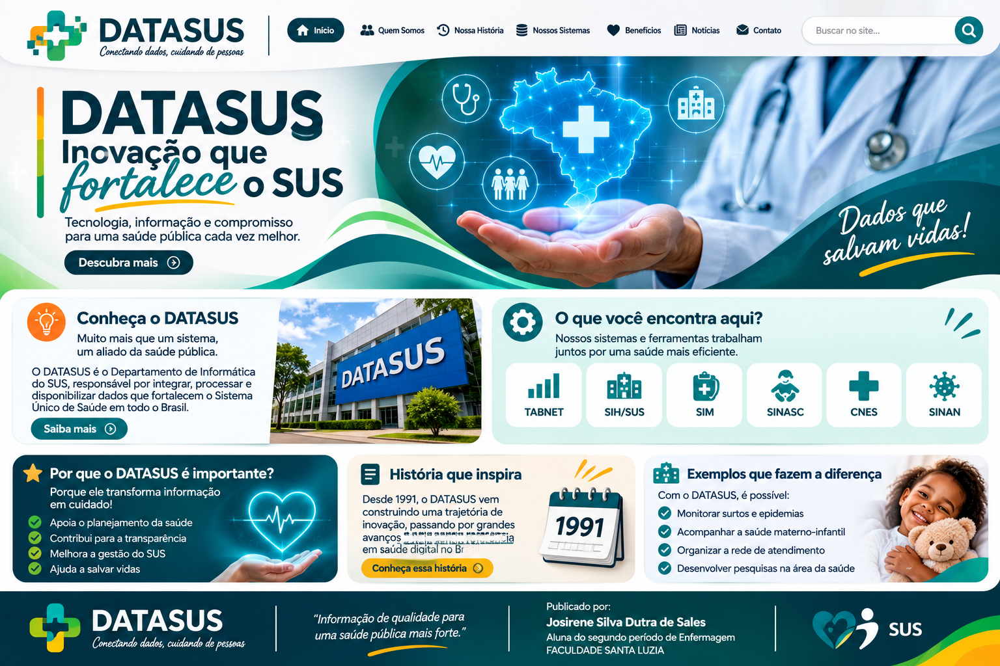

Criação
O Decreto nº 100 marcou a estruturação do DATASUS.
O DATASUS transforma informação em apoio para o Sistema Único de Saúde.

Saúde conectadaO DATASUS é a área de tecnologia da informação do Ministério da Saúde. Seus sistemas ajudam a organizar e consultar dados do SUS.
Acessar o portal oficial ↗O Decreto nº 100 marcou a estruturação do DATASUS.
Sistemas e dados apoiam a gestão e o acesso à informação em saúde.
Reunir registros e informações de saúde.
Facilitar a consulta a dados públicos.
Contribuir para gestão, planejamento e pesquisa.
Consulta e tabulação de dados públicos.
Informações sobre agravos de notificação.
Cadastro de estabelecimentos de saúde.
Ajuda a orientar decisões.
Contribui para reconhecer necessidades.
Amplia o acesso à informação pública.